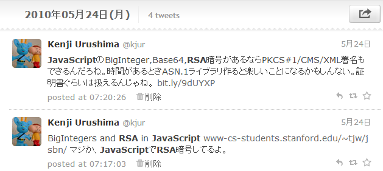
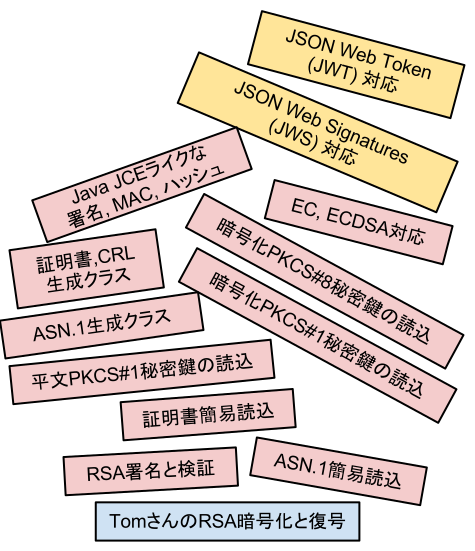
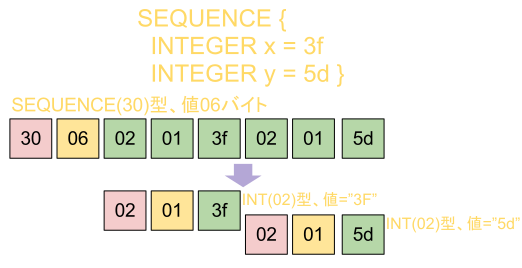
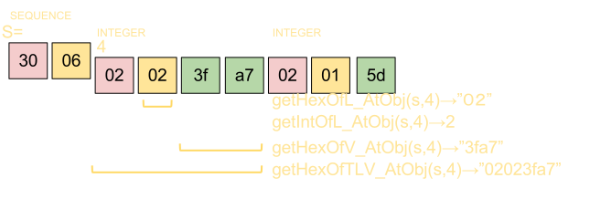
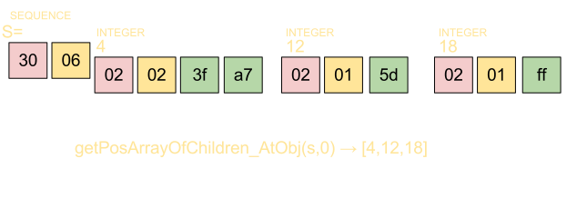
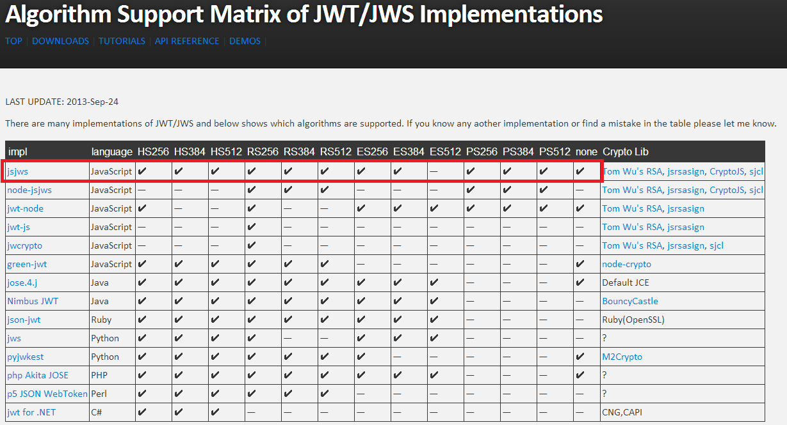
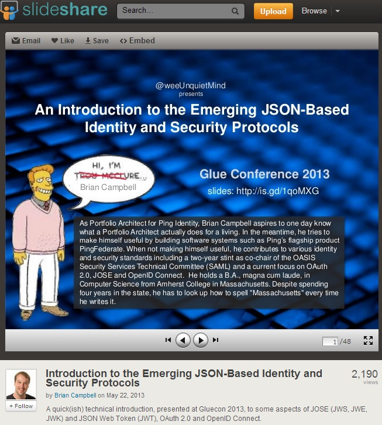
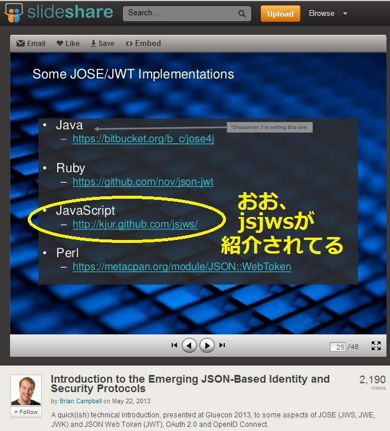
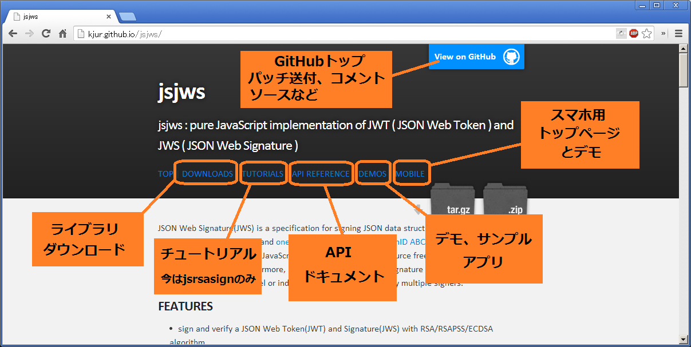

JavaScript実装の暗号ライブラリ、JWT/JWS
jsrsasignとjsjws
JNSA電子署名WG スキルアップTF 講演資料(配布版)
2013年9月30日
今日のアジェンダ
- jsrsasign 暗号ライブラリ
- jsjws JSON署名/認証トークンライブラリ
自己紹介
- セキュリティ、PKI、署名、SSL、認証好きな人
- またの名を「証明書ハンター」
- 「自堕落な技術者の日記」のブログの人
blog.livedoor.jp/k_urushima - Twitterでは @kjur な人
- PKI、ID(SAML)関係ではかれこれ11年くらい
- Challenge PKI、アジアPKI相互接続実証実験、S/MIMEテスト、 ECOM長期署名実験、ETSIプラグテスト、JIS、ISOなど
- 主にECOM、デ協、JNSAで活動
- 富士ゼロックスの中の人らしいが今日は個人として来ました
そもそものきっかけは？
- Javaはやべーな orz
- Perlは終わりだな orz
- Rubyは既に
暗号ライブラリあるしな orz - いやー、今どきの若者はJavaScriptらしいですよ。Node.jsとかあるし。
きっかけはスタンフォード大Tom Wuさんの
2006年4月からあったらしい
JavaScriptでRSA暗号化ができるページ
http://www-cs-students.stanford.edu/~tjw/jsbn/

2010年、私のはしゃぎっぷり


じゃぁ、jsrsasignで
何ができるの？
RSA署名ができるだけじゃないんです
jsrsasignの機能・特徴
- RSA/RSAPSS/ECDSA署名の生成・検証ができる
- 秘密鍵、公開鍵、証明書の扱いが簡単
- ハッシュ関数、HMACができる
- Java JCEみたいに使いやすい
- ASN.1の読込み、生成ができる
- 証明書の発行ができる
- Base64、HEX等の文字列変換
- スマホブラウザでも動く
酔ってスマホいじって
急にこんなこと
よくあるよね？
「あ〜、楕円暗号で署名して〜」とか
「あ〜、ハッシュ計算して〜」とか
「あ〜、ASN.1つくりて〜」とか
「あ〜、JWT署名して〜」とか
そんな時、jsrsasign、jsjws
例えば、
スマホブラウザで
JWT署名が
できるんです
jsrsasign,jsjwsの構成

こう書くと整然と作った見たいだけど・・・
実際は「ハ○ルの動く城」orz
思いついたままに建て増ししただけorz
使われてんの？

Mozilla Persona BrowserID
Mozillaの認証サービスPersona, BrowserIDでは 暗号ライブラリとしてMozillaが開発した jwcryptoが使われているが、その中では jsrsasign が使われている。 https://login.persona.org/https://github.com/mozilla/jwcrypto/blob/master/libs/dependencies.txt
Named Data Networking
米国立科学財団(NSF)の4つの新プロジェクトの一つで研究費8億円、 のUCLAのLixia Zhang女史らIETFの重鎮がリードする Named Data Networking(NDN)プロジェクトの JavaScriptのセキュリティライブラリにjsrsasignが含まれており、 技術報告でも引用頂いている。 named-data.netGeekなページ:未来インターネットアーキテクチャ
含まれるjsrsasignのライセンス
NDN技報:Development and Experimentation with NDN-JS, a JavaScript Library for Named Data Networking (参考文献[9])
The H:
WikiLeaksなどの盗聴、情報漏えい対策としてブラウザ上での暗号化、署名が必要↓
そこでjsrsasign http://www.h-online.com/open/features/Lessons-from-WikiLeaks-decentralize-decentralize-decentralize-1153977.html?page=2
EGIZ オーストリアの電子政府推進機関:
クライアント側ウェブアプリのためのJavaScript暗号に関する調査報告↓
そこでjsrsasign http://www.egiz.gv.at/files/download/Dokumentation.pdf

スペイン電子政府の開発サイト
スペイン政府(GOBIERNO DE ESPAÑA)の 通信技術センターの開発のインシデント管理システム(Gestor de incidencias de la Forja del Centro de Transferencia de Tecnología)で 電子投票イニシアチブのソースコード(Código del PFG Democracia Electrónica - Iniciativas Legislativas Populares)にjsrsasignが使われていたり。Forja del CTT
Mantisリポジトリへのリンク
Hello Kenji,
I'm contacting you because I am starting to work on a somewhat bigger project that could use your Library. I am a member of the german Pirate Party and responsible for the implementation of a provable internet-voting system we just decided to use.
In a nutshell I need a way to generate RSA Private Keys, export them via PKCS#1 PEM, X509 Certs or similar methods, as well as signing, encrypting, and verifying signatures.
There are a few questions I'd like to get answered, if you have the time. Do you deem your project ready for use in a central position for securing vote integrity for a party of 30.000 people? Do you have a way of exporting generated Keys via one of the above mentioned methods in mind for your library? I have had trouble trying to export a generated RSAKey, is there a way as of right now?
Kind regards,
参考 NHK: 活躍!ドイツ海賊党 〜ネット世代の政治のゆくえ〜
http://www.dailymotion.com/video/xy5a70
基本機能である
デジタル署名
ハッシュ関数
メッセージ認証(MAC)
概要
対応するアルゴリズム
| 署名 | *withRSA, *withRSAandMGF1, *withECDSA |
| ハッシュ | MD5,SHA1/224/256/384/512,RipeMD160 |
| MAC | HmacMD5/SHA1/224/256/384/512 |
| 楕円曲線 |
|
署名:Signature
// 生成例
var sig = KJUR.crypto.Signature({alg: 'SHA1withECDSA'});
sig.init(PKCS#5/8秘密鍵PEM文字列など[, パスコード]);
sig.updateString('aaa');
var sigValueHex = sig.sign();
// 検証例
var sig2 = KJUR.crypto.Signature({alg: 'RSAwithECDSA'});
sig2.init(PKCS#8公開鍵や証明書など);
sig2.updateHex('616161');
var isValid = sig2.verify(sigValueHex2);
ハッシュ関数:MessageDigest
var md = new KJUR.crypto.MessageDigest({alg: "sha256"});
md.updateString("aaa");
md.updateHex("1f3daa34");
var hashValue = md.digest();
// 一行でできるユーティリティーもある
KJUR.crypto.Util.hashString("aaa", "sha1");
KJUR.crypto.Util.hashHex("471dfbdaaa30", "ripemd160");
メッセージ認証:Mac
var mac = new KJUR.crypto.Mac({alg: "HmacSHA1", pass: "passwd"});
mac.updateString("aaa");
var macHex = mac.doFinal();
(注意) パスワードは16進数でなく文字列
公開鍵暗号の鍵データ
特徴
- RSAとECC
- RSA/ECC鍵ペア生成 KEYUTIL.generateKeypair
- 公開鍵/秘密鍵のロード KEYUTIL.getKey
- PKCS#5 暗号化/平文 PEM秘密鍵
- PKCS#8 暗号化/平文 PEM秘密鍵
- PKCS#8 PEM公開鍵
- PEM X.509公開鍵証明書
- 鍵スペック (例 {n: '1f3a76...', e: '010001'})
- 鍵オブジェクトからPEMフォーマットの生成
鍵ペア生成
var keypair = KEYUTIL.generateKeypair("RSA", 1024);
// ECC
var keypair = KEYUTIL.generateKeypair("EC", "secp256r1");
// で
// keypair.prvKeyObjに秘密鍵のRSAKey/ECDSAオブジェクトが
// keypair.pubKeyObjに公開鍵のRSAKey/ECDSAオブジェクトが
// 設定されている
秘密鍵、公開鍵の読込み
鍵の形式毎に読込むメソッドが別でとても面倒でしたよね？var key = KEYUTIL.getKey(鍵ファイルor証明書orデータ
[, パスワード]
[, HEXのデータタイプ]);
PKCS#5でも8でも暗号化されててもECDSAでもRSAでも証明書でもHEXでも 鍵スペックのJSONでも何でも読込めます。
アルゴリズム:
鍵タイプ:
鍵オブジェクトから
鍵PEM文字列の生成
KEYUTIL.getEncryptedPKCS5PEMFromRSAKey(rsaKey
, "password");
鍵保護する共通鍵暗号→ [, "AES-128-CBC"]);
そのソルト→ [, "3fa4dd..."]);
DES-EBE3-CBC, AES-128-CBC, AES-192-CBC, AES-256-CBCに対応
ASN.1のおさらい
まずはASN.1のおさらい(1)
証明書、鍵、タイムスタンプ、署名データなど
多くの通信データはASN.1形式になっている事が多い。
特徴1：int、longに制限されないとても長いデータを表現可
特徴2：構造化データも表現できる
ASN.1のおさらい(2)
特徴2：構造化データも表現できる
簡単なASN.1の読込み
ASN1HEXクラス
ASN1HEXクラスの基本機能
16進数文字列のASN.1データに対して、指定位置のASN.1オブジェクトのタグ、長さ、値情報が取れる。
ASN1HEXクラスの基本機能(2)
子要素のインデックスリストを得る。
ASN1HEXで子孫Objを扱う
構造型ASN.1の子孫を指定するには、各階層で何番目かを示す"nthList"を使う。ASN.1構造の深い所、例えば証明書の発行者名などを場所指定して取得する場合に重宝する。
SEQUENCE idx=0
SET [0] idx=4
INTEGER 4 [0,0] idx=8 ← 参照したい
INTEGER 31 [0,1] idx=14
SET [1]
UTF8STRING "aaa" [1,0]
IA5STRING "bbb" [1,1]
ASN.1オブジェクトの生成
ASN.1オブジェクトの生成(概要)
基本型、構造型、タグなど全てのASN.1オブジェクトを16進数文字列表現するためのクラスが定義されており、
プロパティを渡すだけで簡単に生成できる。
var s1 = new KJUR.asn1.DERUTF8String({'str': 'テスト'}});
var seq = new KJUR.asn1.DERSequence({'array': [i1, s1]});
var hex = seq.getEncodedHex();
BouncyCastleやIAIKと大体同じ。
でも、もっと簡単な方法が→
ASN.1オブジェクトの生成(2)
newObjectでJSONデータから一発生成
{seq: [ // SEQUENCE
{int: 234}, // INTEGER
{utf8str: 'テスト'} // UTF8String
]}
).getEncodedHex();
X.509証明書の
ASN.1オブジェクトの生成
X.509証明書 ASN.1の生成は
大体、BouncyCastle、IAIKに似ています。
o.setSerialNumberByParam({'int': 4});
o.setSignatureAlgByParam({'name': 'SHA1withRSA'});
o.setIssuerByParam({'str': '/C=US/O=a'});
o.setNotBeforeByParam({'str': '130504235959Z'});
o.setNotAfterByParam({'str': '140504235959Z'});
o.setSubjectByParam({'str': '/C=US/CN=b'});
o.setSubjectPublicKeyByParam({'rsakey': rsaKey});
// 拡張も足せます
o.appendExtension(
new KJUR.asn1.x509.BasicConstraints({'cA':true}));
o.appendExtension(
new KJUR.asn1.x509.KeyUsage({'bin':'11'}));
// 署名してPEMにしましょう。
OpenID Connect, OAuth2で使われる
JWT、JWSとjsjws
JSON Web Signature(JWS)
JSON形式の何のアルゴリズムで署名したかとかいった署名属性に署名対象をつけておこなう署名フォーマット。次で詳しく。JSON Web Token(JWT)
JSON形式のデジタル証明書のようなもの。JWSで署名したJWSデータの一種。JWSの署名アルゴリズム
- HS256,384,512 - HmacSHA256,384,512
- RS256,384,512 - SHA256,384,512withRSA
- ES256,384,512 -
SHA256,384,512withECDSA(NIST P-256,384,521) - PS256,384,512 -
SHA256,384,512withRSAandMGF1(RSAPSS) - none - 署名なし
というわけで、jsrsasignには、RSA/ECDSA/RSAPSS署名もHMACもあるし、鍵も簡単に使えるし、Base64URLエンコーディングさえあればJWSなんか簡単にできちゃうぞと!
Base64エンコーディングとは
- バイナリデータを"A-Z","a-z","0-9","+","/"の印字可能文字にエンコードする。任意の3バイトが4文字になる。
- 長さが4の倍数にならない時には末尾に"="をつけて揃える。
- メールの添付ファイルや証明書のPEM形式などで使われる
Base64URLエンコーディングとは
- URL表現おいては"+"や"/"は特別な意味を持つのでBase64では具合が悪いため "+"を"-"、"/"を"_"に変換したもの。
- "="は必ず省略する。
- JWS,JWTで多用される。
Base64URLエンコーディング変換
関数：AtoB (例 utf8tob64u)、A、Bには例えば以下が使える
- s - ASCII文字列
- utf8 - UTF8文字列
- hex - 16進数文字列
- b64 - Base64エンコード文字列
- b64u - Base64URLエンコード文字列
で、jsjwsを作りました
kjur.github.io/jsjwsjsjwsの特徴
- RSA, RSAPSS, ECDSA署名をサポート
- サポート率では12/13で世界最多!(w)
- いろんな鍵フォーマットに対応しており簡単
- pure JavaScript実装でスマホブラウザでも動く
- 並列署名JWS-JSもサポート(これも世界唯一?)
アルゴリズムのサポートは世界最多
jsjwsが12/13とサポートアルゴリズムが最も多い。JWS/JWTのJavaScript実装ではjsrsasignを使うのがほぼデファクト  kjur.github.io/jsjws/index_mat.htmljose4jの作者のスライドで引用頂いた
  www.slideshare.net/briandavidcampbell/an-introduction-to-the-emerging-jsonbased-identity-and-security-protocolsBrian Campbellさん：Ping Identityの人、2011年Googleセキュリティ殿堂入り
JWSの生成と検証
// JWS署名生成
JWS.sign(Alg, ヘッダ, ペイロード, 秘密鍵[, 鍵パスワード]);
JWS.sign("RS256", '{cty: "JWT"}', '{iss:"aaa",sub:"tom"}', "----BEGIN PRIV...");
// JWS署名検証
JWS.verify(JWS署名, 公開鍵情報);
JWS.verify("eyBhb...", "---BEGIN X509 CERT...");
いろんな形式の鍵を扱えるのでとても便利なはず
で、JWTも作れます
IntDate.get('now') - 今のUNIX時刻
IntDate.get('now + 1day') - 24時間後
IntDate.get('now + 1year') - 365日後
IntDate.get('YYYYmmDDHHMMSSZ') - UTC時刻
IntDate.get(1377714748) - UNIX時間(そのまま)
RSAPSSのソルト、JWS、OpenSSLの細かい話
- RSAPSS署名とは「ある仮定の下でその安全性が数学的に証明可能である」ような RSA署名
- 実装によるソルト長のデフォルトの違い
- BouncyCastle - SHA1で20バイト、それ以外は個別に指定
- OpenSSL - 特別値(-2): 可能な限り長く(鍵長-ハッシュ長-2)
- JWSではソルト長＝ハッシュ長を想定？でも記載なし
- 崎村さん、Mikeさんの調整で明記頂ける方向だそう
補足
Node.jsとjsrsasignとjsjws
- 最近とても流行っているServer Side JavaScript
- 私はNode.js対応していないが
- 海外のいろんな人がNode.js対応してnpmリポジトリに置いてる
関連npmパッケージ
npmjs.orgで検索してみてください。- jsjws - 高速なバイナリRSAつきjsjws
- cryptico - RSAによる簡単な暗号化、署名
- bignumber-jt - RSAによる簡単な暗号化、署名
- node-bignumber - RSAによる簡単な暗号化、署名
- burningpig-encryption - RSAによる簡単な暗号化、署名
W3C Web Cryptography API
www.w3.org/TR/WebCryptoAPIセキュリティ考察は必要
www.matasano.com/articles/javascript-cryptography
開発してみたくなったら
サイトに来て下さい
サイトの歩き方
https://kjur.github.io/jsrsasign/https://kjur.github.io/jsjws/

ちょっとデモなど
クロージング
果てしない戦いは続く
今後、対応してみたい野望- PKCS#7/CMS 署名、暗号データに対応してみたい
- ということはS/MIME署名/暗号メールに対応してみたい
- SSHだってChrome JavaScriptからできる時代なので SMTPクライアント実装してS/MIME署名暗号メールを ブラウザから送ってみたい
- DSA署名に対応したい(PGPのJavaScript実装が既にこれに対応)
- JCEライクなCipherクラスを実装し共通鍵暗号ラッパーに 対応したい
- XML署名/暗号に対応したい
- PDF署名に対応したい(JavaScript PDF生成は既にある)
- 当然の事ながらCAdES/XAdES長期署名に対応してみたい
- jsrsasign, jsjwsのNode.jsパッケージ作成
まとめ
- jsrsasignは最初、RSA署名だけだったけど今は違う
- 今は、BouncyCastleみたいな暗号ライブラリ
- 意外と世界中いろんなところで使われている
- 署名,ハッシュ,HMACがJava JCEみたいで使いやすい
- どんな秘密鍵、公開鍵でも簡単に扱える
- ASN.1関係も充実
- OpenID Connect用のJWS, JWTにも対応(jsjws)
- JWTのJavaScript実装ではjsrsasignはデファクト
- JWTの署名アルゴリズム対応はかなり世界最強
- スマホブラウザでも無問題で動く、遅いけど
おしまい
ご清聴ありがとうございました
リンク集
- jsrsasign - https://kjur.github.io/jsrsasign/
- jsjws - https://kjur.github.io/jsrsasign/